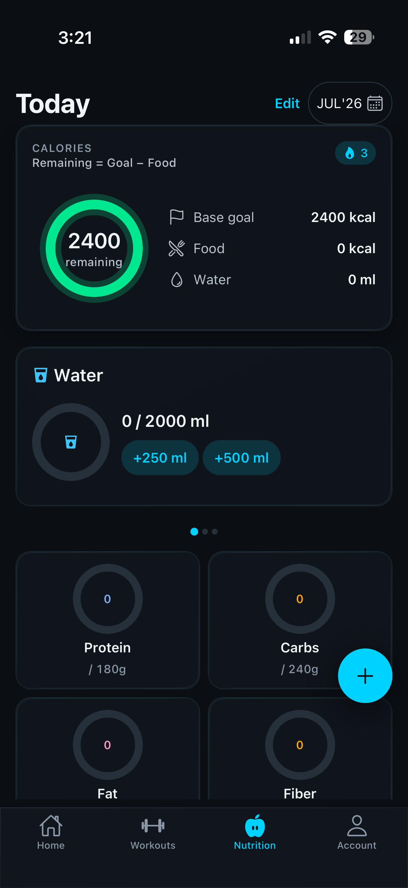
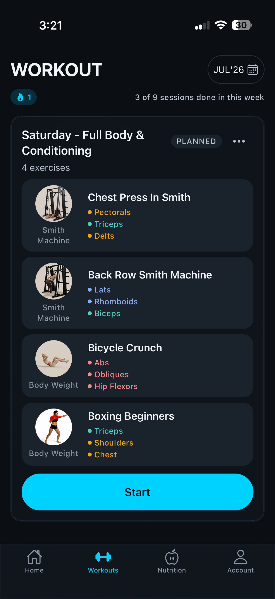
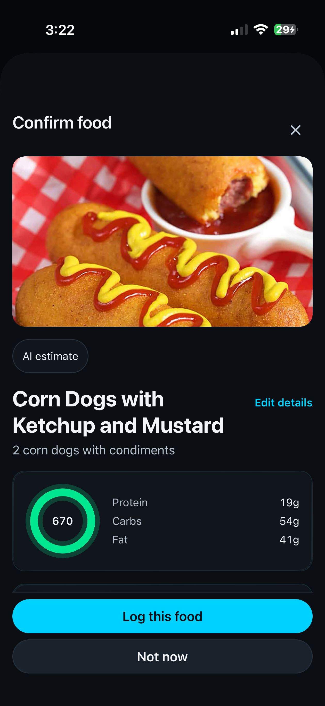
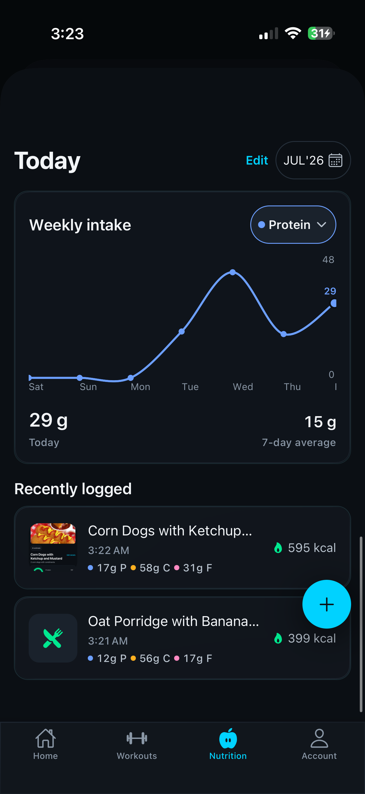
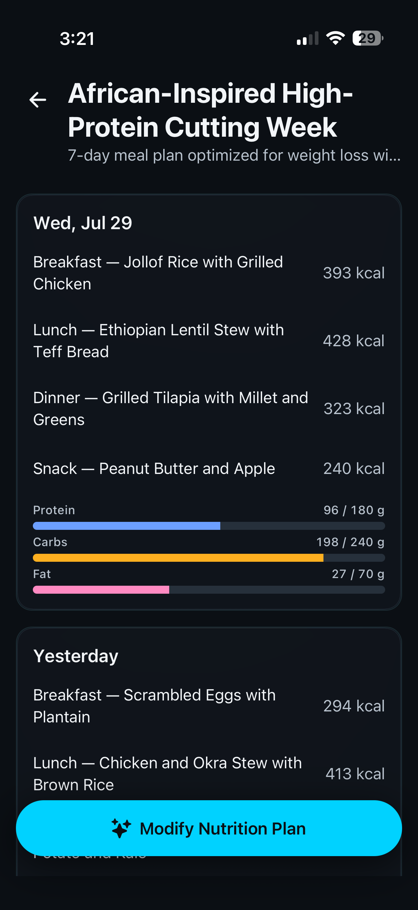
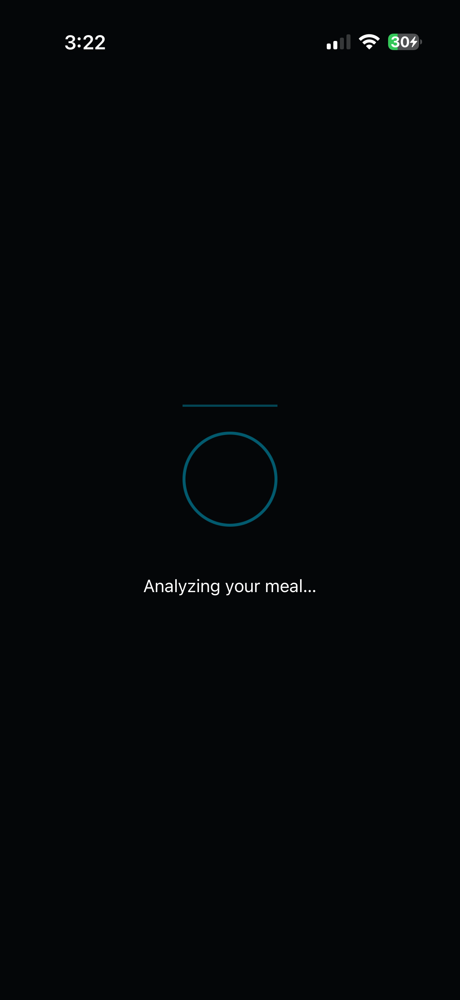
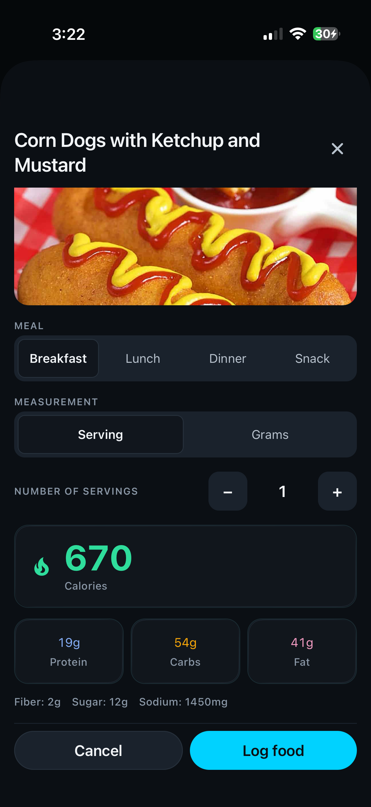
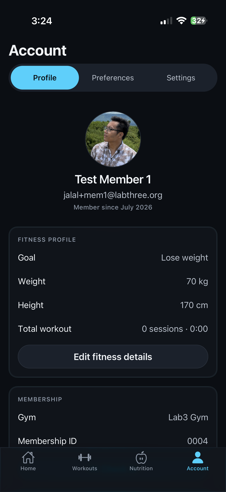
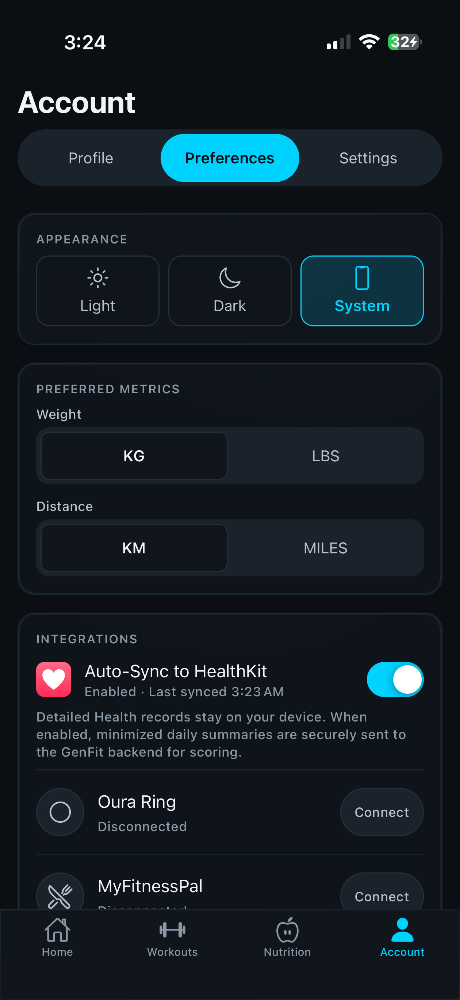
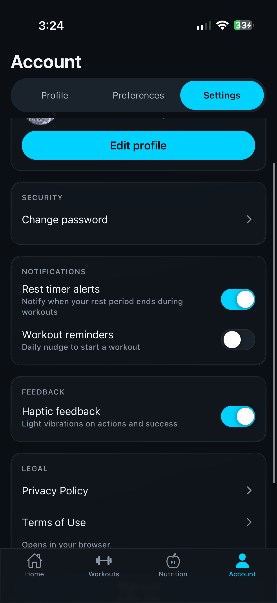

iOS and Android from one codebase. 25 screens, 978 tests, 1,219 exercise videos, four LLM-backed features, plus an architecture that let me build the whole app before the backend existed.




GenFit needed to be on both stores fast, and the API was being designed at the same time as the app. Waiting wasn't an option, and stubbing a few fetch calls wasn't going to survive contact with real native modules: HealthKit, Health Connect, the camera, Terra wearables.
So the first thing I built wasn't a screen. It was the seam between the app and everything outside it.
Every external dependency resolves through its own mock | real | live flag. Real adapters are lazily require()d, so native modules never load in mock mode or under Jest. The whole app runs, and every test runs, with no backend and no device.
Runtime schemas across 19 modules. Every network response is parsed before it reaches state, so a backend change surfaces as a typed error at the boundary, not a crash three screens later.
Long-running async work re-checks the uid before and after every await, throwing session_changed rather than writing one user's data into another's account after a fast switch.
Problem: gym Wi-Fi drops mid-set. Awaiting Firestore meant the save spinner hung forever and the user lost the set.
Fix: the local AsyncStorage write is the commit. The Firestore push runs detached and outlives the screen. A pending-sync banner tells the truth instead of a fake success, with foreground retry on AppState and drafts rejected on version or uid mismatch.
Problem: HealthKit queries were silently returning the user's entire history, and writes were never actually authorized. Neither failed loudly.
Fix: the date filter had to nest as {date:{startDate,endDate}} (top-level dates were ignored), and the auth key was toShare, not toWrite. Both found by reading the library source, not the docs.
Problem: a fat-fingered 500 kg log permanently poisoned PR celebration. Deleting the entry didn't help: records only ever moved up.
Fix: recomputeRecordFor lets a deletion lower a record. The test is named after the bug: "a fat-fingered 500kg no longer blocks confetti forever once deleted."
Problem: a Firestore wildcard rule was gated on a data field rather than a path, meaning any future collection named entries or sessions would be exposed by default.
Fix: removed it and replaced it with owner-gated recursive rules plus a superadmin | admin | staff | trainer role layer. No access lost, a whole class of future exposure closed.
The hard part of shipping AI in a mobile app isn't the prompt. It's what happens when the user backgrounds the app halfway through a 30-second generation.
Writes an optimistic generating doc before the network call. It's deliberately a plain function, not a hook, so it finishes even if you navigate away.
Built from TDEE and macro goals, with a safety net that back-fills any field the model omits by name-matching against the generated plan.
Claude vision behind a PRIMING → SCANNING → ANALYZING → CONFIRM phase machine. The camera unmounts during analysis; guests are gated before the camera prompt, not after a 401.
Same-muscle swaps when the rack is taken. Each one returns a reason string, so the app explains itself rather than just substituting.
107-entry pattern table, mod-103 checksum, printable-ASCII validation, fail-loud on unencodable input. Rendered as SVG with a proper quiet zone and hard-coded black-on-white, because a themed barcode won't scan. Zero dependencies.
Each question has a stable ID, its own version, a Zod schema and an activation predicate. pruneStaleAnswers loops until stable, safety triage routes to eligible / pending / restricted / urgent with an emergency path, and there's a full v1→v2 document migration.
Ring, ScoreRing, ArcGauge, Sparkline, LineChart (Catmull-Rom → cubic Bézier), Hypnogram, StageBars, MacroBar. Ring geometry is plain unit-tested JS; only strokeDashoffset animates, in a worklet.
iOS 26 native GlassView where it exists, BlurView plus tint where it doesn't, and an opaque surface under reduce-transparency.
Deterministic catalog build, ffmpeg staging (hardlink mp4, lossless remux for .mov so ExoPlayer can play it), CDN-cached upload, three-way consistency verifier. Clips preload one at a time so there's no burst on gym Wi-Fi.
reduceMotion branches in every animation, drag-and-drop reordering exposed as accessibility actions, state never carried by color alone, 44px touch minimum enforced by token and asserted in a test. A contract test computes WCAG relative luminance inline.
Mock and live adapters tested as a pair. Health Connect branches covered without a device. A timezone regression suite pinned to TZ=America/Santiago. Contract tests, not just behaviour tests.






Happy to walk through any of this properly: the offline commit inversion, the intake state machine, or why the barcode encoder had to be black on white.